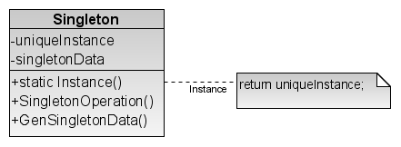

Паттерн Singleton
Название и классификация паттерна
Одиночка - паттерн, порождающий объекты.
Назначение
Гарантирует, что у класса есть только один экземпляр, и предоставляет к нему глобальную точку доступа.
Мотивация
Для некоторых классов важно, чтобы существовал только один экземпляр. Хотя в системе может быть много принтеров, но возможен лишь один спулер. Должны быть только одна файловая система и единственный оконный менеджер. В циф ровом фильтре может находиться только один аналого-цифровой преобразователь (АЦП). Бухгалтерская система обслуживает только одну компанию.
Как гарантировать, что у класса есть единственный экземпляр и что этот эк земпляр легко доступен? Глобальная переменная дает доступ к объекту, но не за прещает инстанцировать класс в нескольких экземплярах.
Более удачное решение - сам класс контролирует то, что у него есть только один экземпляр, может запретить создание дополнительных экземпляров, пере хватывая запросы на создание новых объектов, и он же способен предоставить доступ к своему экземпляру. Это и есть назначение паттерна одиночка.
Применимость
Используйте паттерн одиночка, когда:
- а должен быть ровно один экземпляр некоторого класса, легко доступный всем клиентам;
- а единственный экземпляр должен расширяться путем порождения подклас сов, и клиентам нужно иметь возможность работать с расширенным экземп ляром без модификации своего кода.
Структура
Участники
- a Singleton - одиночка:
- - определяет операцию Instance, которая позволяет клиентам получать доступ к единственному экземпляру. Instance - это операция класса, то есть метод класса в терминологии Smalltalk и статическая функция-член в C++;
- - может нести ответственность за создание собственного уникального эк земпляра.
Отношения
Клиенты получают доступ к экземпляру класса Singleton только через его операцию Instance.
Результаты
У паттерна одиночка есть определенные достоинства:
- Q контролируемый доступ к единственному экземпляру. Поскольку класс Singleton инкапсулирует свой единственный экземпляр, он полностью контролирует то, как и когда клиенты получают доступ к нему; а уменьшение числа имен. Паттерн одиночка - шаг вперед по сравнению с гло бальными переменными. Он позволяет избежать засорения пространства имен глобальными переменными, в которых хранятся уникальные экземп ляры;
- а допускает уточнение операций и представления. От класса Singleton мож но порождать подклассы, а приложение легко сконфигурировать экземп ляром расширенного класса. Можно конкретизировать приложение экземп ляром того класса, который необходим во время выполнения; а допускает переменное число экземпляров. Паттерн позволяет вам легко изме нить свое решение и разрешить появление более одного экземпляра класса Singleton. Вы можете применять один и тот же подход для управления чис лом экземпляров, используемых в приложении. Изменить нужно будет лишь операцию, дающую доступ к экземпляру класса Singleton;
- а большая гибкость, чем у операций класса. Еще один способ реализовать функ циональность одиночки - использовать операции класса, то есть статичес кие функции-члены в C++ и методы класса в Smalltalk. Но оба этих приема препятствуют изменению дизайна, если потребуется разрешить наличие нескольких экземпляров класса. Кроме того, статические функции-члены в C++ не могут быть виртуальными, так что их нельзя полиморфно замес тить в подклассах.
Реализация
При использовании паттерна одиночка надо рассмотреть следующие вопросы:
- а гарантирование единственного экземпляра. Паттерн одиночка устроен так,
что тот единственный экземпляр, который имеется у класса, - самый обыч
ный, но больше одного экземпляра создать не удастся. Чаще всего для этого
прячут операцию, создающую экземпляры, за операцией класса (то есть за
статической функцией-членом или методом класса), которая гарантирует
создание не более одного экземпляра. Данная операция имеет доступ к пе
ременной, где хранится уникальный экземпляр, и гарантирует инициализа
цию переменной этим экземпляром перед возвратом ее клиенту. При таком
подходе можно не сомневаться, что одиночка будет создан и инициализи
рован перед первым использованием.
В C++ операция класса определяется с помощью статической функции-чле
на Instance класса Singleton. В этом классе есть также статическая
переменная-член „instance, которая содержит указатель на уникальный
экземпляр.
Класс Singleton объявлен следующим образом: class Singleton { public: static Singleton* Instance(); protected: Singleton(); private: static Singleton* „instance; };А реализация такова:Singleton* Singleton::_instance = 0; Singleton* Singleton::Instance () { if (_instance == 0) { _instance = new Singleton; } return „instance; }Клиенты осуществляют доступ к одиночке исключительно через функцию член Instance. Переменная „instance инициализируется нулем, а ста тическая функция-член Instance возвращает ее значение, инициализируя ее уникальным экземпляром, если в текущий момент оно равно 0. Функция Instance использует отложенную инициализацию: возвращаемое ей зна чение не создается и не хранится вплоть до момента первого обращения. Обратите внимание, что конструктор защищенный. Клиент, который попы тается инстанцировать класс Singleton непосредственно, получит ошиб ку на этапе компиляции. Это дает гарантию, что будет создан только один экземпляр. Далее, поскольку „instance - указатель на объект класса Singleton, то функция-член Instance может присвоить этой переменной указатель на любой подкласс данного класса. Применение возможности мы увидим в разделе «Пример кода». О реализации в C++ скажем особо. Недостаточно определить рассматрива емый патерн как глобальный или статический объект, а затем полагаться на автоматическую инициализацию. Тому есть три причины:- - мы не можем гарантировать, что будет объявлен только один экземпляр статического объекта;
- - у нас может не быть достаточно информации для инстанцирования лю бого одиночки во время статической инициализации. Одиночке могут быть необходимы данные, вычисляемые позже, во время выполнения программы;
- - в C++ не определяется порядок вызова конструкторов для глобальных объектов через границы единиц трансляции [ES90]. Это означает, что между одиночками не может существовать никаких зависимостей. Если они есть, то ошибок не избежать.
new self error: 'не удается создать новый объект1 default Solelnstance isNil ifTrue: [Solelnstance := super new]. ^ Solelnstance - а порождение подклассов Singleton. Основной вопрос не столько в том, как опре
делить подкласс, а в том, как сделать, чтобы клиенты могли использовать
его единственный экземпляр. По существу, переменная, ссылающаяся на
экземпляр одиночки, должна инициализироваться вместе с экземпляром
подкласса. Простейший способ добиться этого - определить одиночку, ко
торого нужно применять в операции Instance класса Singleton. В раз
деле «Пример кода» показывается, как можно реализовать эту технику с по
мощью переменных среды.
Другой способ выбора подкласса Singleton - вынести реализацию опера
ции Instance из родительского класса (например, MazeFactory) и помес
тить ее в подкласс. Это позволит программисту на C++ задать класс оди
ночки на этапе компоновки (скомпоновав программу с объектным файлом,
содержащим другую реализацию), но от клиента одиночка будет по-прежне
му скрыт.
Такой подход фиксирует выбор класса одиночки на этапе компоновки, за
трудняя тем самым его подмену во время выполнения. Применение услов
ных операторов для выбора подкласса увеличивает гибкость решения, но
все равно множество возможных классов Singleton остается жестко «за
шитым» в код. В общем случае ни тот, ни другой подход не обеспечивают
достаточной гибкости.
Ее можно добиться за счет использования реестра одиночек. Вместо того
чтобы задавать множество возможных классов Singleton в операции
Instance, одиночки могут регистрировать себя по имени в некотором всем
известном реестре.
Реестр сопоставляет одиночкам строковые имена. Когда операции Instance
нужен некоторый одиночка, она запрашивает его у реестра по имени. Начи
нается поиск указанного одиночки, и, если он существует, реестр возвраща
ет его. Такой подход освобождает Instance от необходимости «знать» все
возможные классы или экземпляры Singleton. Нужен лишь единый для
всех классов Singleton интерфейс, включающий операции с реестром:
class Singleton { public: static void Register(const char* name, Singleton*); static Singleton* Instance ().; protected: static Singleton* Lookup(const char* name); private: static Singleton* „instance; static ListОперация Register регистрирует экземпляр класса Singleton под ука занным именем. Чтобы не усложнять реестр, мы будем хранить в нем спи сок объектов NameSingletonPair. Каждый такой объект отображает имя на одиночку. Операция Lookup ищет одиночку по имени. Предположим, что имя нужного одиночки передается в переменной среды:* „registry; Singleton* Singleton::Instance () { if („instance == 0) { const char* singletonName = getenv("SINGLETON"); // пользователь или среда предоставляют это имя на стадии // запуска программы _instance = Lookup(singletonName); // Lookup возвращает 0, если такой одиночка не найден return „instance;В какой момент классы Singleton регистрируют себя? Одна из возмож ностей - конструктор. Например, подкласс MySingleton мог бы работать так:MySingleton::MySingleton() { Singleton::Register("MySingleton", this); }Разумеется, конструктор не будет вызван, пока кто-то не инстанцирует класс, но ведь это та самая проблема, которую паттерн одиночка и пытается разрешить! В C++ ее можно попытаться обойти, определив статический эк земпляр класса My Single ton. Например, можно вставить строку static MySingleton theSingleton; в файл, где находится реализация MySingleton. Теперь класс Singleton не отвечает за создание одиночки. Его основной обязанностью становится обеспечение доступа к объекту-одиночке из любой части системы. Подход, сводящийся к применению статического объекта, по-прежнему имеет потенциальный недостаток: необходимо созда вать экземпляры всех возможных подклассов Singleton, иначе они не бу дут зарегистрированы.
Пример кода
Предположим, нам надо определить класс MazeFactory для создания лаби ринтов, описанный на стр. 99. MazeFactory определяет интерфейс для построения различных частей лабиринта. В подклассах эти операции могут переопределять ся, чтобы возвращать экземпляры специализированных классов продуктов, на пример объекты BombedWall, а не просто Wall.
Существенно здесь то, что приложению Maze нужен лишь один экземпляр фабрики лабиринтов и он должен быть доступен в коде, строящем любую часть лабиринта. Тут-то паттерн одиночка и приходит на помощь. Сделав фабрику MazeFactory одиночкой, мы сможем обеспечить глобальную доступность объек та, представляющего лабиринт, не прибегая к глобальным переменным.
Для простоты предположим, что мы никогда не порождаем подклассов от MazeFactory. (Чуть ниже будет рассмотрен альтернативный подход.) В C++ для того, чтобы превратить фабрику в одиночку, мы добавляем в класс MazeFactory статическую операцию Instance и статический член _instance, в котором бу дет храниться единственный экземпляр. Нужно также сделать конструктор защи щенным, чтобы предотвратить случайное инстанцирование, в результате которо го будет создан лишний экземпляр:
class MazeFactory {
public:
static MazeFactory* Instance();
// здесь находится существующий интерфейс
protected:
MazeFactory();
private:
static MazeFactory* „instance;
};
Реализация класса такова:
MazeFactory* MazeFactory::_instance = 0;
MazeFactory* MazeFactory::Instance 0 {
if (_instance == 0) {
_instance = new MazeFactory;
}
return _instance;
}
Теперь посмотрим, что случится, когда у MazeFac tory есть подклассы и опре деляется, какой из них использовать. Вид лабиринта мы будем выбирать с по мощью переменной среды, поэтому добавим код, который инстанцирует нужный подкласс MazeFactory в зависимости от значения данной переменной. Лучше всего поместить код в операцию Instance, поскольку она уже и так инстанциру ет MazeFactory:
MazeFactory* MazeFactory::Instance () {
if (_instance == 0) {
const char* mazeStyle = getenv("MAZESTYLE");
if (strcmp(mazeStyle, "bombed") == 0) {
„.instance = new BombedMazeFactory;
} else if (strcmp(mazeStyle, "enchanted") == 0) {
_instance = new EnchantedMazeFactory;
// ... другие возможные подклассы
} else { // по умолчанию
_instance = new MazeFactory;
}
}
return _instance;
}
Отметим, что операцию Instance нужно модифицировать при определении каждого нового подкласса MazeFactory. В данном приложении это, может быть, и не проблема, но для абстрактных фабрик, определенных в каркасе, такой под ход трудно назвать приемлемым.
Одно из решений - воспользоваться принципом реестра, описанным в разде ле «Реализация». Может помочь и динамическое связывание, тогда приложению не нужно будет загружать все неиспользуемые подклассы.
Известные применения
Примером паттерна одиночка в Smalltalk-80 [РагЭО] является множество из менений кода, представленное классом ChangeSet. Более тонкий пример - это отношение между классами и их метаклассами. Метаклассом называется класс класса, каждый метакласс существует в единственном экземпляре. У метакласса нет имени (разве что косвенное, определяемое экземпляром), но он контролирует свой уникальный экземпляр, и создать второй обычно не разрешается.
В библиотеке Interviews для создания пользовательских интерфейсов [LCI+92] - паттерн одиночка применяется для доступа к единственным экземпля рам классов Session (сессия) и WidgetKit (набор виджетов). Классом Session определяется главный цикл распределения событий в приложении. Он хранит пользовательские настройки стиля и управляет подключением к одному или не скольким физическим дисплеям. WidgetKit - это абстрактная фабрика для определения внешнего облика интерфейсных виджетов. Операция WidgetKit: : instance () определяет конкретный инстанцируемый подкласс WidgetKit на основе переменной среды, которую устанавливает Session. Аналогичная опе рация в классе Session «выясняет», поддерживаются ли монохромные или цвет ные дисплеи, и соответственно конфигурирует одиночку Session.
Родственные паттерны
С помощью паттерна одиночка могут быть реализованы многие паттерны. См. описание абстрактной фабрики, строителя и прототипа.